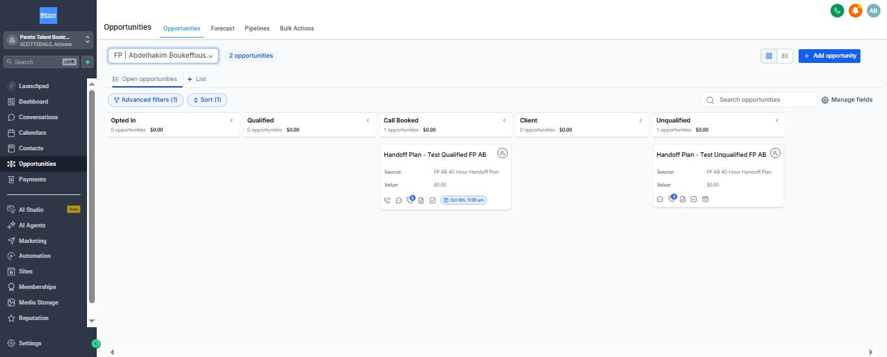
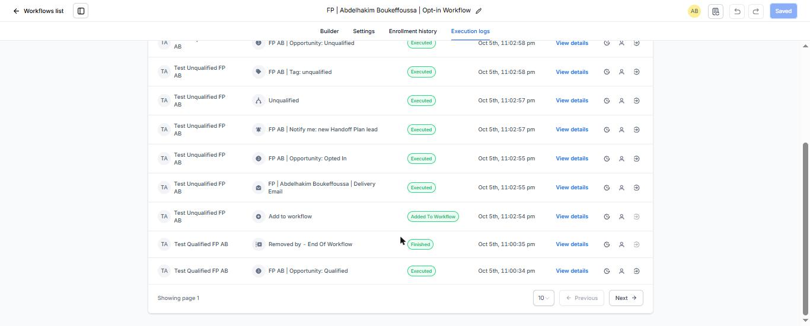

Pipeline: every lead has a stage
FP | Abdelhakim Boukeffoussa | Handoff Plan Pipeline · GoHighLevel
One pipeline for the whole funnel. No lead is ever moved by hand: the workflows (L12) create the opportunity on opt-in and move it on every event that matters.
| Stage | Win probability | Moved here by | What it means for Pareto |
|---|---|---|---|
| Opted In | 10% | Opt-in Workflow, the second the form is sent | Has the plan. Not scored yet. |
| Qualified | 30% | Opt-in Workflow, if revenue is $50K+/month and admin is 10+ hours/week | Fits a full-time Right Hand. Gets the 3-email follow-up. |
| Call Booked | 60% | Booking Workflow, when a Matching Call is booked | Sales conversation on the calendar. Follow-up emails stop. |
| Client | 100% | Pareto's team, after the match | Signed. |
| Unqualified | 0% | Opt-in Workflow, everyone below the bar | Too early for a full-time hire. Gets the 3-email nurture, can still book any time. |
Why these thresholds. A full-time Right Hand pays for itself when the founder hands off 10+ hours a week and the business can carry the salary. Below $50K/month or below 10 hours, a call is more likely to waste both sides' time, so those leads get value first (nurture) and keep the booking link.
Why stage, tag and custom fields together. The stage drives the sales view. The tags (fp ab qualified, fp ab unqualified) start the follow-up workflows. The three custom fields (monthly revenue, admin hours, biggest bottleneck) keep the answers on the contact, so the Matching Call starts with context instead of discovery questions.
One rule worth knowing. "Call Booked" is allowed to move an opportunity backwards in the pipeline order. An unqualified lead who books anyway is treated as a booked call, not ignored.
1 · The board after the end-to-end test (Oct 5)
Two test leads, one per path. The qualified lead booked a call and sits in Call Booked with its appointment date. The unqualified lead sits in Unqualified.

2 · The Booking Workflow moving the lead to Call Booked
Booking at 11:49 pm → confirmation email → opportunity moved to Call Booked → removed from the follow-up and nurture sequences → waiting for the 24-hour reminder.

3 · The Opt-in Workflow placing a lead (unqualified path)
Opted In → scored by the If/else → tagged → moved to Unqualified, all within 5 seconds of the form.
